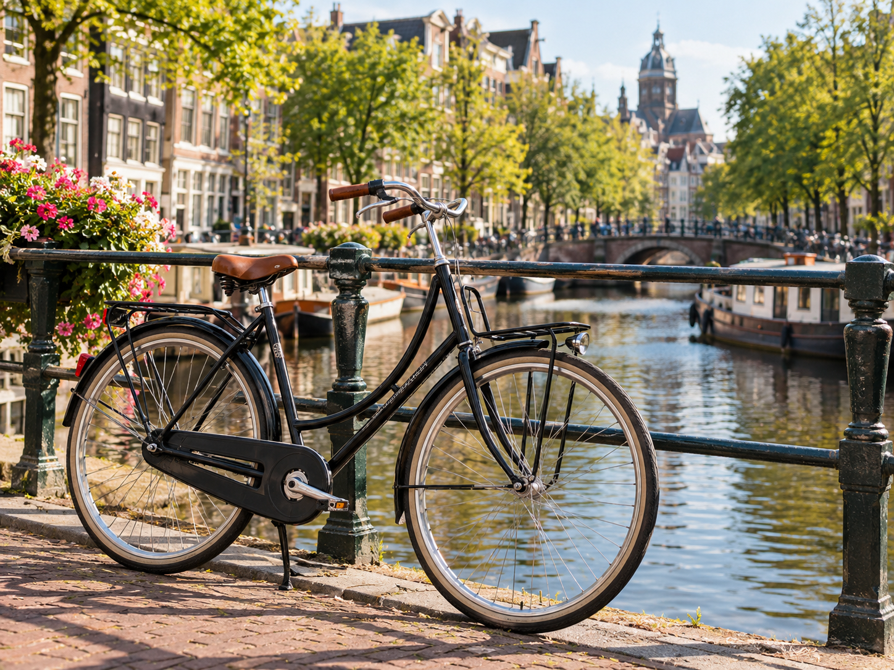
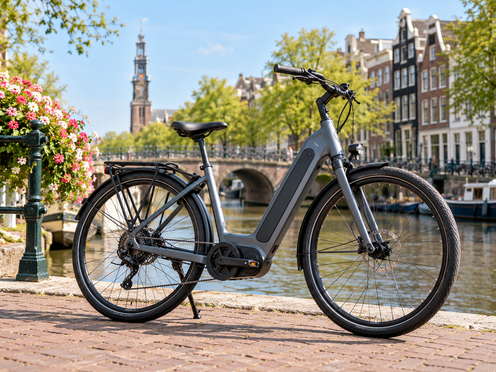
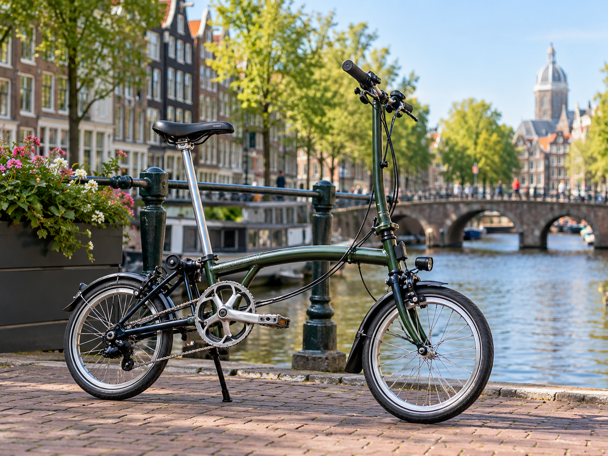

Choose the Right Bike for You
Choosing the right bike can make cycling in Amsterdam
more comfortable and enjoyable. Different bikes are
suitable for different people and situations.
Think about how you will use the bike, how comfortable
you want to be, and how easy it is to carry or store.

City Bike
A city bike is a comfortable choice for everyday
cycling and short trips around Amsterdam.
It usually has an upright riding position,
a comfortable seat, and simple controls.
It is a good option if you want an easy bike
for exploring the city at your own pace.

E-bike
An e-bike has an electric motor that helps you
while you pedal. It can be a good choice for
longer rides or if you want some extra support
while cycling. It can make travelling around
the city easier, especially when you want to
cover more distance.

Folding Bike
A folding bike can be folded into a smaller size,
making it easy to carry and store.
It can be useful for visitors who have limited
storage space or want a bike that is easier
to transport. It is a practical choice for
short city trips.